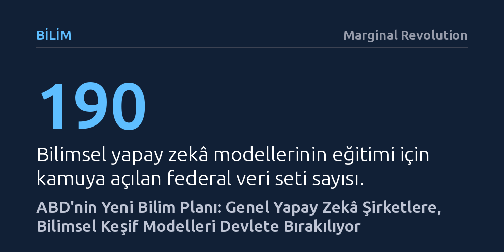

BILIM · Marginal Revolution · 2026-10-25
ABD'nin yeni bilim planı, özel sektörün geliştirdiği genel yapay zekâyı fonlamak yerine kamu veri setlerini açarak modelleri doğrudan bilimsel keşiflere odaklamayı amaçlıyor. Bu strateji, devlet kaynaklarını temel model yarışına değil, kimya, fizik ve malzeme bilimindeki araştırma darboğazlarını aşmaya yönlendiriyor.
Yapay zekâ yarışında devletin rolünün dev modeller üretmek değil, kamu verilerini açarak temel bilimlerdeki keşifleri hızlandırmak olduğunu gösteriyor.

Ekonomist Tyler Cowen ile Beyaz Saray'ın bilim danışmanı Michael Kratsios arasındaki tartışma, yapay zekâ çağında kamu kaynaklarının nasıl bölüştürülmesi gerektiğine dair temel bir endişeyle başlıyor. Cowen, bilimin birbirine bağlı unsurlardan oluşan hassas bir ekosistem olduğunu vurguluyor. Bu tür sistemlerde fon sağlayıcıların en dinamik ve hızlı sonuç veren alanlara yönelmesi sık rastlanan bir eğilimdir; günümüzde bu çekim merkezini yapay zekâ oluşturuyor.
Ancak ekosistemin bir bütün olarak sağlıklı işlemesi isteniyorsa, kamu desteğinin marjinal getirisi yüksek olan ama sermaye çekmekte zorlanan zayıf halkalara yönelmesi gerekir. Cowen'a göre üniversiteler ve geleneksel araştırma kurumları gibi görece daha az verimli görünen alanlar ihmal edilirse, tüm kaynakların yapay zekâya akması ilerlemeyi hızlandırmak yerine derin darboğazlar yaratabilir. Kaynaksız kalan temel disiplinler, eninde sonunda tüm bilimsel üretimi tıkayan bir engele dönüşecektir.
Michael Kratsios bu endişeyi yanıtlarken hükümetin stratejisini net bir ilkeye dayandırıyor ve kritik bir ayrımın altını çiziyor: Beyaz Saray genel amaçlı süper zekâya değil, "bilim için süper zekâya" yatırım yapmayı hedefliyor. Özel sektörün genel yapay zekâ modellerine şimdiden milyarlarca, hatta trilyonlarca dolar akıttığı bir ortamda, federal hükümetin aynı alana kaynak aktarması hem gereksiz hem de mükerrer bir harcama olacaktır.
Kratsios'un yaklaşımında, en son teknolojiye sahip sınır modellerini (frontier models) geliştirmek Amerikan teknoloji devlerinin üstlendiği bir görevdir. Devletin asıl sorumluluğu ise şirketlerin kâr odaklı ajandalarında geri planda kalan bir alanda, yani bu gelişmiş modellerin temel bilimsel keşif süreçlerine nasıl uyarlanacağı meselesinde devreye girmektir. Zira genel zekâ modellerinin laboratuvar ortamına ve bilimsel yönteme entegrasyonu henüz başlangıç aşamasındadır.
Büyük dil modellerinin evrim çizgisi, bu yeni stratejinin mantıksal zeminini oluşturuyor. Gelişimin ilk dalgasında internet üzerindeki tüm açık metin külliyatı taranarak genel dil yeteneklerine sahip modeller inşa edildi. Ardından gelen ikinci dalgada, yazılım kodlarının yüksek kaliteli ve yapılandırılmış bir veri havuzu sunduğu fark edildi; bu sayede OpenAI Codex ve Anthropic gibi aktörlerin öncülüğünde kodlama kabiliyeti yüksek uzmanlaşmış modeller ortaya çıktı.
Kratsios'a göre bu evrimin bir sonraki ve en dönüştürücü sayfası temel bilimlerde açılacak. Ancak bilimsel muhakeme yapabilecek modelleri eğitmek, internetten rastgele metin toplamaya benzemiyor; son derece temiz, doğrulanmış ve özgül veri kümeleri gerektiriyor. Bu açığı kapatmak isteyen federal yönetim, malzeme biliminden kimyaya, fizikten matematiğe kadar geniş bir yelpazede yapay zekâ modellerinin eğitilmesini sağlayacak 190 federal veri setini kamuya açtığını duyurdu.
Federal veri setlerinin araştırmacıların kullanımına sunulması, yapay zekâyı metin üreten bir sohbet robotu olmaktan çıkarıp atomik yapıları, kimyasal bileşikleri ve karmaşık fiziksel süreçleri modelleyen bir keşif aracına dönüştürmeyi amaçlıyor. Kamu eliyle sağlanan bu veri altyapısı, özel sektörün sermayesiyle kamunun elindeki zengin araştırma birikimini bir araya getirerek bilim insanlarına yeni bir kaldıraç kazandırmayı hedefliyor.
Sonuç itibarıyla Beyaz Saray, Cowen'ın dile getirdiği "yapay zekâ diğer bilim dallarını eziyor mu" kaygısını, yapay zekâyı bizzat o dalların hizmetine koşarak aşmayı planlıyor. Devlet devasa modeller tasarlamakla uğraşmayacak; bunun yerine elindeki benzersiz veri hazinesini açarak süper zekânın bilimsel keşif hızını katlamasını sağlayacak.